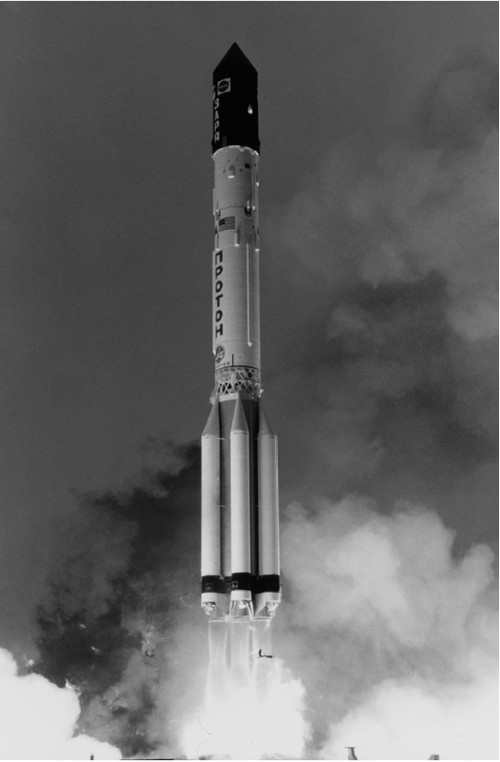
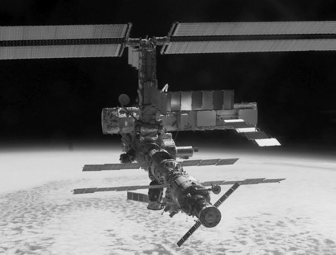
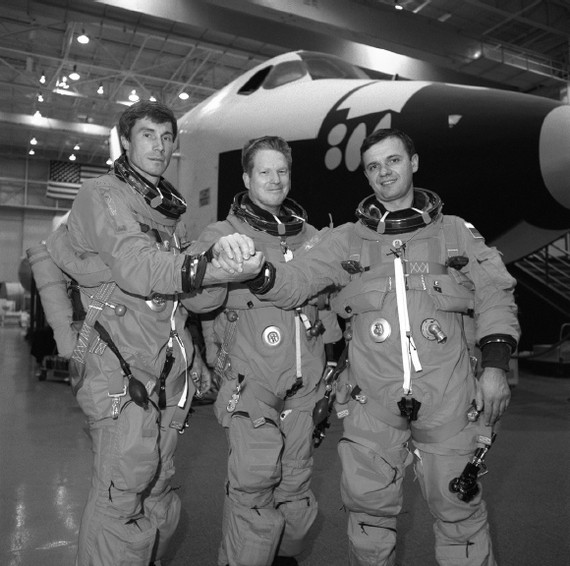

Окончание противостояния: новые реалии
Изменения, которые претерпела политическая карта мира в конце 1980-х – начале 1990-х годов, заставили по-новому взглянуть на проблему освоения космического пространства. Этот период можно охарактеризовать таким образом: «от противостояния – к сотрудничеству». Согласитесь, довольно банальная фраза. И, тем не менее, она лучше всего отражает реалии тех лет.
Какие же изменения претерпела космонавтика, и не только американская, в последнее десятилетие минувшего века?
Во-первых, без особого шума были свернуты практически все проекты, предусматривавшие размещение на орбите боевых ударных систем. Это касалось не только тех работ, которые были уже «на выходе», но и исследовательских программ.
Во-вторых, была пересмотрена концепция освоения космического пространства в сторону ее коммерциализации и передачи большинства функций от правительственных ведомств в частные руки.
В-третьих, реализация крупных проектов стала осуществляться в рамках международной кооперации, что снизило бремя затрат отдельных стран на освоение космоса.
Основным плодом всех этих изменений стало строительство Международной космической станции (МКС) – самого масштабного проекта современности, в создании которой принимают участие полтора десятка стран. Хотя корни этой программы надо искать все в той же эпохе «Звездных войн», которым и посвящена данная часть книги.
В июле 1984 года президент США Рональд Рейган объявил о начале работ по созданию национальной орбитальной станции.
В одном из своих выступлений он сказал: «Сегодня я предложил НАСА создать постоянно действующую космическую станцию не более чем за десять лет». Спустя восемь месяцев американское аэрокосмическое агентство заключило восемь контрактов на разработку концепции, элементов и узлов будущей станции. Тогда же начались переговоры с представителями космических агентств Японии, Канады и стран Западной Европы об участии в этом проекте.
В 1988 году инициатива Рейгана приобрела конкретные черты. Первый вариант станции предполагал создание на орбите 122-метровой конструкции массой в несколько сот тонн. Так как предполагалось вести строительство силами ряда стран, то проект получил наименование «Фридом» («Свобода»).
Но десяти отпущенных президентом на разработку лет не хватило, хотя это и обошлось американским налогоплательщикам в 20 миллиардов долларов. Не исключено, что проект постепенно заглох бы, если бы не распад Советского Союза. Исчезновение главного противника на международной арене позволило Штатам иначе взглянуть на возможность создания орбитальной станции силами международного сообщества. И грех был не подключить к этому делу Россию, обладавшую немалым опытом строительства подобных космических конструкций.
17 июня 1992 года Россия и США заключили первое соглашение о сотрудничестве в исследовании космоса. В соответствии с ним космические агентства двух стран разработали совместную программу «Мир – Шаттл», состоящую из трех взаимосвязанных проектов: полетов российских космонавтов на американских кораблях многоразового использования, экспедиций американских астронавтов на российскую станцию «Мир» и полетов шаттлов, в ходе которых осуществлялась их стыковка с «Миром».
Дальнейшее рассмотрение направлений совместных космических исследований натолкнуло стороны на идею объединения усилий по созданию национальных орбитальных комплексов.

Старт ракеты-носителя «Протон-К» с модулем «Заря» – первым элементом Международной космической станции
Возможность включения российских элементов в конфигурацию «Фридома» начала рассматриваться с августа 1993 года. А уже 1 ноября 1993 года в Москве представители Российского космического агентства и НАСА подписали Соглашение о порядке создания постоянной космической станции. Тогда же появилось и новое название – Международная космическая станция. Спустя год состоялись первые консультации по этому вопросу.
Теперь договоренности США и России от 1992 года интегрировались в новый проект и становились первым этапам строительства международного космического дома. В ходе полетов на «Мир» американцы должны были набраться опыта, которого им в ту пору не хватало. Эти полеты состоялись в 1995–1998 годах.

Идет сборка МКС
Вторым этапом должно было стать строительство новой орбитальной станции на основе российского и американского сегментов. В ходе третьего этапа предполагалось завершить строительство МКС и в течение нескольких лет эксплуатировать станцию всеми участниками проекта.
В марте 1995 года эскизный проект станции был утвержден. К 1996 году определилась конфигурация станции, состоящая из двух сегментов – российского (пересмотренный вариант проекта «Мир-2») и американского, с участием Канады, Японии, Италии, стран ESA и Бразилии. После окончания строительства это должно быть огромное сооружение массой 470 тонн, длиной 109 метров и шириной 88,4 метра.

Первая экспедиция на МКС готовится к старту
29 января 1998 года в Вашингтоне были подписаны межправительственные соглашения по проекту МКС и меморандумы между космическими агентствами США, России, Европы и Канады о сотрудничестве в разработке элементов станции. В соответствии с соглашением российский и американский сегменты полностью используются российским и американским космическими агентствами соответственно. Европейский модуль должен быть поделен между Европейским космическим агентством (51 %), НАСА (46,7 %) и Канадским космическим агентством (2,3 %). В таких же пропорциях был «поделен» и японский модуль.
На этапе сборки поровну должны быть поделены работы на борту станции между российскими и американскими космонавтами. При эксплуатации – российский экипаж из трех человек будет постоянно работать на своем сегменте, а время на американском сегменте для четырех астронавтов (тогда предполагалось, что экипаж станции будет включать семь космонавтов) будет поделено между американцами, японцами, европейцами и канадцами.
Строительство станции было начато 20 ноября 1998 года запуском первого сегмента – российского модуля «Заря». Вскоре к нему «присоединился» американский блок «Юнити».
Эксплуатация станции в пилотируемом режиме началась 2 ноября 2000 года, когда на борт МКС прибыл экипаж первой длительной экспедиции – россияне Юрий Гидзенко и Сергей Крикалев и американец Уильям Шеперд (William Sheperd).
Худо-бедно строительство станции велось до февраля 2003 года. После гибели шаттла «Колумбия», о чем будет рассказано в следующей главе, строительство было приостановлено и возобновилось только спустя три года. Основная фаза строительства была завершена только в 2010 году, но еще несколько лет станция будет пополняться новыми модулями.
Катастрофа «Колумбии» не привела к перерыву в полетах на МКС. Пока выясняли причину аварии шаттла, пассажиро– и грузопоток на станцию обеспечивали российские «Союзы» и «Прогрессы». Это позволило все годы, когда был перерыв в полетах челноков, эксплуатировать МКС в пилотируемом режиме.